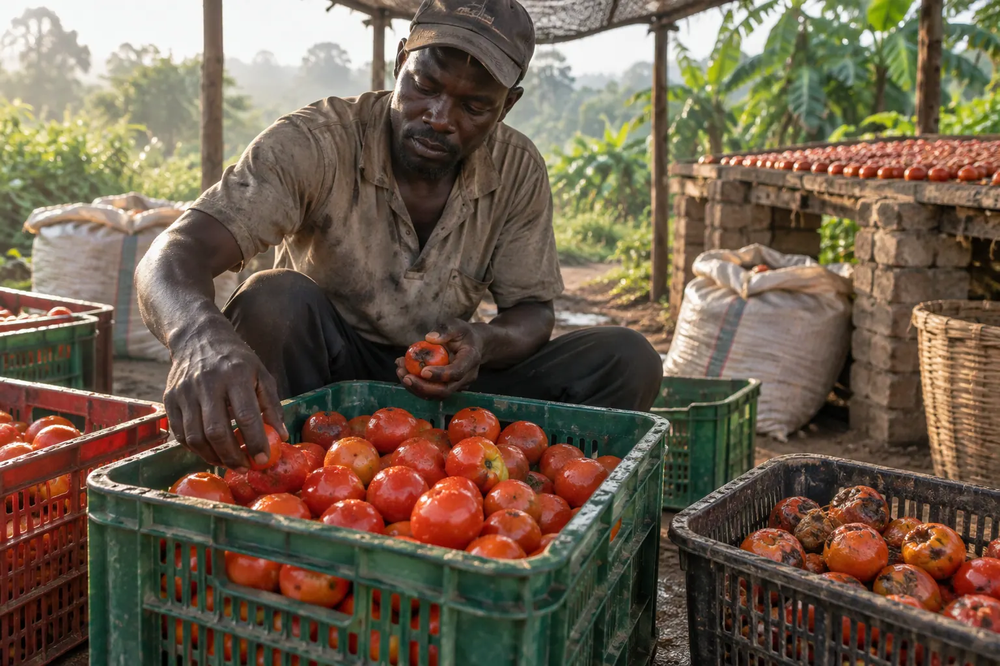

Tomato farmer, Zaria / Jalingo
Cuts at noon because the truck cannot wait, loads in sacks, sells the remainder at the gate for a third of the price. The panic sale is not a market problem, it is a temperature problem.
Post-harvest loss · Nigeria
It is not pests and it is not bad luck. It is field heat, sacks instead of crates, a truck with no vents and a market you reach two days after the tomato decided to ripen. CropKeep puts money on each of those decisions and ranks the fixes by what they return to you this season.

01 · Where the harvest goes
Everything you spent on seed, fertiliser, labour and fuel is already in the crate. What happens next is pure margin — and it is decided by six or seven small choices, none of which anyone writes down.
Ranges drawn from published post-harvest literature on Nigerian perishables and stored grain. Your season will differ; measure your own batches in the ledger below.
Cuts at noon because the truck cannot wait, loads in sacks, sells the remainder at the gate for a third of the price. The panic sale is not a market problem, it is a temperature problem.
15–20% down to weevils, moisture and mould — and the mould is the dangerous one. A ₦3,500 hermetic bag per 50 kg is the cheapest technology on this page.
Two nights on the road decides the whole trip. Covered load, vented stacks and shade on arrival are handling, not hardware — and they are free.
02 · Your harvest, in naira
Pick the crop, state the tonnage and the gate price, and say how long it takes to reach a buyer. Then tick the handling you really do, not the handling you wish you did. The decay bar below is the same batch, drawn as loss.
03 · Temperature is the whole game
This is the Q10 rule horticulture has used for a century: for each 10 °C drop, the biochemical clock slows by about half. CropKeep applies it as life = base days × 0.5^((T − base temp)/10), then asks the only question that matters — does it survive the trip?
—
Field estimates. Chilling-sensitive crops (tomato, banana, garden egg) are damaged below roughly 10–12 °C, so "colder" is not automatically "better" — the ladder flags it.
Where the batch sits now, versus what each storage option would actually give it.
—
04 · What to buy, and what to skip
Nine interventions, from a ₦3,500 hermetic bag to a ₦950,000 cold room. Each is scored against your crop class, your tonnage, your distance to market and the power you have — and the ranking is by net naira left this season after paying for the thing itself.
| Option | Fit | Cost this season | Loss with it | Points saved | Avoided / cycle | Avoided / season | Net / season | Payback | Choose |
|---|
Every rejected or outscored option, in one sentence, for this exact answer set.
—
—
—
—
05 · Harvest window planner
Five weeks of flow against the storage you can actually afford. Any week where volume beats capacity is a panic-selling week — and that, not the market, is why the price collapses on you.
—
—
06 · Batch ledger
Log a batch, sell it, come back and enter what you actually lost. The gap between the two is the only number that teaches you anything — and the sheet you can hand to a store manager or cooperative is the one this table prints.
| Batch | Date | Crop | kg | Value | Storage chosen | Projected loss | Actual loss ₦ | Difference | Remove |
|---|
No batches yet. Fill the calculator and press Add this batch to the ledger. Enter the actual loss after the sale — that is what makes the estimate honest.
07 · Numbers in the open
If your cooperative gets hermetic bags at ₦2,800, or your tomato baseline is 45% not 40%, put it in. Everything downstream — the decay bar, the matrix, the top three, the payback — recomputes live.
| Crop | Baseline % | Floor % | Days | Base °C |
|---|
Baseline is the mid-point of published unimproved-loss ranges for that crop in Nigeria; floor is the best loss achievable by handling alone, without cooling. Shelf life is the quoted days at the base temperature.
1,000 kg of tomato at ₦180/kg — the arithmetic, shown every time you change a tick.
Recomputed live from whatever is in the calculator above.
08 · Questions people actually ask
No. They are mid-points of published post-harvest loss ranges for each crop in Nigerian conditions, and they move with season, variety, ridge position and how the pick was done. Treat them as a starting hypothesis: log three batches in the ledger, enter the actual loss after the sale, and use your baseline from then on.
At 1,000 kg a cycle the charcoal cooler pays back in a handful of cycles; the cold room needs volume and reliable power to get there at all. Change the tonnage and the grid answer above and watch the top three reorder — that reordering is the actual point of this tool.
The calculator can tell you that hermetic storage suppresses mould growth by limiting moisture and oxygen. It cannot tell you whether your maize is safe to sell or eat. That is a laboratory result, and no arithmetic on this page substitutes for it.
Because every crop has a floor: bruising in the last sackful, road vibration, a buyer who inspects badly. Handling credits stop there on purpose. If a tool promises you 0% loss on tomato with crates and shade, it is selling you a dream, not a system.
Your state agricultural development programme, a commodity association post-harvest officer, or a commercial cold-chain audit. Bring the printed batch record — three weeks of weighed losses is a better brief than any estimate, including this one.